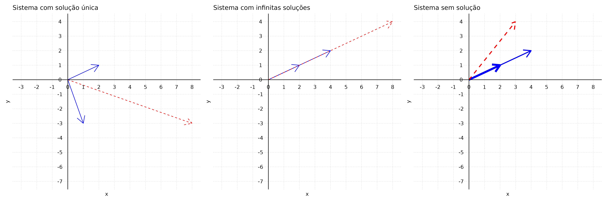

Sistemas de Equações Lineares
9833 - BASES DA MATEMÁTICA E ESTATÍSTICA PARA CIÊNCIAS DO MAR
Conteúdo da aula
- Conceitos Iniciais
- Tipos de Soluções
- Representação Geométrica
- Métodos Diretos
- Operações Elementares com Linhas
- Método de Eliminação de Gauss
- Método de Eliminação de Gauss-Jordan
- Sistemas Homogêneos
- Aplicações
- Conjuntos geradores
- Dependência linear
Conceitos Iniciais
Equação linear
Uma equação linear em \(n\) variáveis \(x_1, x_2, \ldots, x_n\) é uma equação que pode ser escrita na forma:
\[a_1 x_1 + a_2 x_2 + \cdots + a_n x_n = b\]
em que os coeficientes \(a_1, a_2, \ldots, a_n\) e o termo independente \(b\) são constantes.
\[ \begin{cases} 2x + y = 8 \\ x - 3y = -3 \end{cases} \]
\[ \begin{cases} x + 2y - z = 3 \\ 3x - y + 4z = 7 \\ 2x + y + z = 4 \end{cases} \]
Representações Geométricas
\[ \begin{cases} 2x + y = 8 \\ x - 3y = -3 \end{cases} \]


Tipos de Soluções

Métodos Diretos de Solução de Sistemas
\[ \begin{cases} x - y - z = 2 \\ y + 3z = 5 \\ 5z = 10 \end{cases} \]
\[ S = \left[ \begin{array}{c} 3 \\ -1 \\ 2 \end{array} \right] \]
Substituição de trás para frente
- Começando pela linha 3:
\(5z = 10\), \(z = 2\)
- Substituindo \(z\) na linha 2:
\(y + 3z = 5\), \(y + 3 \times (2) = 5\), \(y = 5 - 6\), \(y = -1\)
- Substituindo \(z\) e \(y\) na linha 1:
\(x - y - z = 2\), \(x - (-1) - 2 = 2\), \(x = 2 - 1 + 2\), x = 3
Métodos Diretos de Solução de Sistemas
Sistema
\[ \begin{cases} x - y - z = 2 \\ y + 3z = 5 \\ 5z = 10 \end{cases} \]
Matriz aumentada (ou matriz completa)
\[ \left[ \begin{array}{ccc|c} 1 & -1 & -1 & 2 \\ 0 & 1 & 3 & 5 \\ 0 & 0 & 5 & 10 \end{array} \right] \]
\[ \begin{cases} x - y - z = 2 \\ 3x - 3y + 2z = 16 \\ 2x - y + z = 9 \end{cases} \]
\[ \left[ \begin{array}{ccc|c} 1 & -1 & -1 & 2 \\ 3 & -3 & 2 & 16 \\ 2 & -1 & 1 & 9 \end{array} \right] \]
Métodos Diretos de Solução de Sistemas
Simplificando o sistema
\[ \begin{cases} x - y - z = 2 \\ 3x - 3y + 2z = 16 \\ 2x - y + z = 9 \end{cases} \]
\[ \left[ \begin{array}{ccc|c} 1 & -1 & -1 & 2 \\ 3 & -3 & 2 & 16 \\ 2 & -1 & 1 & 9 \end{array} \right] \]
Subtraindo \(3\) vezes a \(1^a\) linha da \(2^a\)
\[ \begin{cases} x - y - z = 2 \\ 5z = 10 \\ 2x - y + z = 9 \end{cases} \]
\[ \left[ \begin{array}{ccc|c} 1 & -1 & -1 & 2 \\ 0 & 0 & 5 & 10 \\ 2 & -1 & 1 & 9 \end{array} \right] \]
Subtraindo \(2\) vezes a \(1^a\) linha da \(3^a\)
\[ \begin{cases} x - y - z = 2 \\ 5z = 10 \\ y + 3z = 5 \end{cases} \]
\[ \left[ \begin{array}{ccc|c} 1 & -1 & -1 & 2 \\ 0 & 0 & 5 & 10 \\ 0 & 1 & 3 & 5 \end{array} \right] \]
Trocando as linhas \(2\) e \(3\)
\[ \begin{cases} x - y - z = 2 \\ y + 3z = 5 \\ 5z = 10 \end{cases} \]
\[ \left[ \begin{array}{ccc|c} 1 & -1 & -1 & 2 \\ 0 & 1 & 3 & 5 \\ 0 & 0 & 5 & 10 \end{array} \right] \]
Matriz Escalonada por linhas
Definição
- Todas as linhas nulas (ou seja, linhas onde todos os elementos são zero) estão localizadas na parte inferior da matriz.
- Em cada linha não-nula, o primeiro elemento não-nulo (também conhecido como elemento lider ou pivô) deve estar à esquerda de qualquer outro líder abaixo dele.
Essas propriedades asseguram que os elementos líderes estejam dispostos de forma a criar uma estrutura semelhante a uma escada. Em particular, em qualquer coluna que contenha um elemento líder, todos os elementos abaixo desse líder são nulos, como ilustrado pelos exemplos a seguir.
Operações Elementares com Linhas
Definição
- Trocar duas linhas: \(L_i \leftrightarrow L_j\)
- Multiplicar uma linha por uma constante não nula: \(L_i = kL_i\)
- Somar um múltiplo de uma linha com outra e substituir nessa linha: \(L_i = L_i + kL_j\)
O processo de aplicar operações elementares sobre as linhas para transformar uma matriz em uma matriz escalonada é denominado escalonamento (ou redução por linha). Esse processo é utilizado para reduzir uma matriz à forma escalonada.
Redução à matriz escalonada
\(\left[ \begin{array}{ccccc} 1 & 2 & -4 & -4 & 5\\ 2 & 4 & 0 & 0 & 2\\ 2 & 3 & 2 & 1 & 5\\ -1 & 1 & 3 & 6 & 5 \end{array} \right]\) \(\begin{array}{c} L_2 - 2L_1\\ L_3 - 2L_1 \\ L_4 + L_1 \\ \end{array}\) \(\left[ \begin{array}{ccccc} 1 & 2 & -4 & -4 & 5\\ 0 & 0 & 8 & 8 & -8\\ 0 & -1 & 10 & 9 & -5\\ 0 & 3 & -1 & 2 & 10 \end{array} \right]\) \(\begin{array}{c} L_2 \leftrightarrow L_3\\ \end{array}\) \(\left[ \begin{array}{ccccc} 1 & 2 & -4 & -4 & 5\\ 0 & -1 & 10 & 9 & -5\\ 0 & 0 & 8 & 8 & -8\\ 0 & 3 & -1 & 2 & 10 \end{array} \right]\)
\(\begin{array}{c} L_4 + 3L_2\\ \end{array}\) \(\left[ \begin{array}{ccccc} 1 & 2 & -4 & -4 & 5\\ 0 & -1 & 10 & 9 & -5\\ 0 & 0 & 8 & 8 & -8\\ 0 & 0 & 29 & 29 & -5 \end{array} \right]\) \(\begin{array}{c} \frac{1}{8}L_3\\ \end{array}\) \(\left[ \begin{array}{ccccc} 1 & 2 & -4 & -4 & 5\\ 0 & -1 & 10 & 9 & -5\\ 0 & 0 & 1 & 1 & -1\\ 0 & 3 & -1 & 2 & 10 \end{array} \right]\)
\(\begin{array}{c} L_4 - 29L_3\\ \end{array}\) \(\left[ \begin{array}{ccccc} 1 & 2 & -4 & -4 & 5\\ 0 & -1 & 10 & 9 & -5\\ 0 & 0 & 8 & 8 & -8\\ 0 & 0 & 0 & 0 & 24 \end{array} \right]\)
Métodos Diretos de Solução de Sistemas
Matrizes equivalentes por linhas
As matrizes \(A\) e \(B\) são equivalentes por linha se, e somente se, elas puderem ser reduzidas à mesma forma escalonada por linhas.
\[\left[ \begin{array}{ccccc} 1 & 2 & -4 & -4 & 5\\ 2 & 4 & 0 & 0 & 2\\ 2 & 3 & 2 & 1 & 5\\ -1 & 1 & 3 & 6 & 5 \end{array} \right]\]
\[\left[ \begin{array}{ccccc} 1 & 2 & -4 & -4 & 5\\ 0 & -1 & 10 & 9 & -5\\ 0 & 0 & 8 & 8 & -8\\ 0 & 0 & 0 & 0 & 24 \end{array} \right]\]
Método de Eliminação de Gauss
Definição
- Escreva a matriz completa do sistema de equações lineares.
- Use operações elementares com as linhas para reduzir a matriz completa à forma escalonada por linhas.
- Usando substituição de trás para a frente, resolva o sistema equivalente que corresponde à matriz escalonada reduzida por linhas.
Orientações úteis:
- Localize a coluna mais à esquerda que não é toda formada por zeros.
- Crie um líder no topo desta coluna. Muitas vezes, será mais fácil se você transformar este líder em 1
- Use o líder para criar zeros abaixo dele.
- Faça a linha contendo este líder ir para a parte de cima e volte ao passo (a) para repetir o procedimento com o restante da submatriz. Pare quando toda a matriz estiver na forma escalonada por linhas.
Método de Eliminação de Gauss
Exemplo
\[ \begin{cases} 2x_2 + 3x_3 = 8 \\ 2x_1 + 3x_2 + x_3 = 5 \\ x_1 - x_2 - 2x_3 = -5 \end{cases} \]
\[ \left[ \begin{array}{ccc|c} 0 & 2 & 3 & 8 \\ 2 & 3 & 1 & 5 \\ 1 & -1 & -2 & -5 \end{array} \right] \]
\(\left[ \begin{array}{ccc|c} 0 & 2 & 3 & 8 \\ 2 & 3 & 1 & 5 \\ 1 & -1 & -2 & -5 \end{array} \right]\) \(\begin{array}{c} L_1 \leftrightarrow L_2 \\ \end{array}\) \(\left[ \begin{array}{ccc|c} 1 & -1 & -2 & -5 \\ 2 & 3 & 1 & 5 \\ 0 & 2 & 3 & 8 \end{array} \right]\) \(\begin{array}{c} L_2 - 2L_1 \\ \end{array}\) \(\left[ \begin{array}{ccc|c} 1 & -1 & -2 & -5 \\ 0 & 5 & 5 & 15 \\ 0 & 2 & 3 & 8 \end{array} \right]\)
\(\left[ \begin{array}{ccc|c} 1 & -1 & -2 & -5 \\ 0 & 5 & 5 & 15 \\ 0 & 2 & 3 & 8 \end{array} \right]\) \(\begin{array}{c} \frac{1}{5}L_1 \\ \end{array}\) \(\left[ \begin{array}{ccc|c} 1 & -1 & -2 & -5 \\ 0 & 1 & 1 & 3 \\ 0 & 2 & 3 & 8 \end{array} \right]\) \(\begin{array}{c} L_3 - 2L_2 \\ \end{array}\) \(\left[ \begin{array}{ccc|c} 1 & -1 & -2 & -5 \\ 0 & 1 & 1 & 3 \\ 0 & 0 & 1 & 2 \end{array} \right]\)
Método de Eliminação de Gauss
Exemplo
\[ \begin{cases} 2x_2 + 3x_3 = 8 \\ 2x_1 + 3x_2 + x_3 = 5 \\ x_1 - x_2 - 2x_3 = -5 \end{cases} \]
\[ \begin{cases} x_1 - x_2 - 2x_3 = -5 \\ x_2 + x_3 = 3 \\ x_3 = 2 \end{cases} \]
\(S = \left[ \begin{array}{c} 0 \\ 1 \\ 2 \end{array} \right]\)
\[ \begin{cases} 2(1) + 3(2) = 8 \\ 2(0) + 3(1) + (2) = 5 \\ (0) - (1) - 2(2) = -5 \end{cases} \]
\[ \begin{cases} (0) - (1) - 2(2) = -5 \\ (1) + (2) = 3 \\ (2) = 2 \end{cases} \]
Método de Eliminação de Gauss
Infinitas soluções: variáveis livres
\[ \begin{cases} w - x - y + 2z = 1 \\ 2w - 2x - y + 3z = 3 \\ -w + x - y = -3 \end{cases} \]
\[ \left[ \begin{array}{cccc|c} 1 & -1 & -1 & 2 & 1 \\ 2 & -2 & -1 & 3 & 3 \\ -1 & 1 & -1 & 0 & -3 \end{array} \right] \]
\(\left[ \begin{array}{cccc|c} 1 & -1 & -1 & 2 & 1 \\ 2 & -2 & -1 & 3 & 3 \\ -1 & 1 & -1 & 0 & -3 \end{array} \right]\) \(\begin{array}{c} L_2 - 2L_1 \\ L_3 + L_1 \\ \end{array}\) \(\left[ \begin{array}{cccc|c} 1 & -1 & -1 & 2 & 1 \\ 0 & 0 & 1 & -1 & 1 \\ 0 & 0 & -2 & 2 & -2 \end{array} \right]\)
\(\begin{array}{c} L_3 + 2L_2 \\ \end{array}\) \(\left[ \begin{array}{cccc|c} 1 & -1 & -1 & 2 & 1 \\ 0 & 0 & 1 & -1 & 1 \\ 0 & 0 & 0 & 0 & 0 \end{array} \right]\)
Método de Eliminação de Gauss
Infinitas soluções: variáveis livres
\[ \begin{cases} w + x - y + 2z = 1 \\ 2w - 2x - y + 3z = 3 \\ -w + x - y = -3 \end{cases} \]
\[ w - x - y + 2z = 1 \\ y - z = 1 \]
\(y - z = 1\)
\(w = 1 + x + y - 2z = 1 + x (1 + z) - 2z = 2 + x - z\)
Escrevendo as variáveis correspondentes aos elementos líderes (variáveis dependentes) em termos das outras variáveis (variáveis livres).
Atribuindo \(x = s\) e \(z = t\):
\(\left[ \begin{array}{c} w \\ x \\ y \\ z \end{array} \right] = \left[ \begin{array}{c} 2 + s - t \\ s \\ 1 + t \\ t \end{array} \right]\)
Posto de uma matriz
Em um sistema possível, as variáveis livres são aquelas que não são variáveis dependentes.
O posto de uma matriz é o número de linhas não nulas de qualquer uma de suas formas escalonadas por linhas.
Denotamos o posto de uma matriz \(A\) por \(posto(A)\).
Teorema do Posto
Seja \(A\) a matriz dos coeficientes de um sistema de equações lineares com \(n\) variáveis. Se o sistema for possível, então o número de variáveis livres é \(n - posto(A)\).
Método de Eliminação de Gauss
Sistemas impossíveis
\[ \begin{cases} x_1 - x_2 + 2x_3 = 3 \\ x_1 + 2x_2 - x_3 = -3 \\ 2x_2 - 2x_3 = 1 \end{cases} \]
\[ \left[ \begin{array}{ccc|c} 1 & -1 & 2 & 3 \\ 1 & 2 & -1 & -3 \\ 0 & 2 & -2 & 1 \end{array} \right] \]
\(\left[ \begin{array}{ccc|c} 1 & -1 & 2 & 3 \\ 1 & 2 & -1 & -3 \\ 0 & 2 & -2 & 1 \end{array} \right]\) \(\begin{array}{c} L_2 - L_1 \\ \end{array}\) \(\left[ \begin{array}{ccc|c} 1 & -1 & 2 & 3 \\ 1 & 3 & -3 & -6 \\ 0 & 2 & -2 & 1 \end{array} \right]\) \(\begin{array}{c} \frac{1}{3}L_2 \\ \end{array}\) \(\left[ \begin{array}{ccc|c} 1 & -1 & 2 & 3 \\ 1 & 1 & -1 & -2 \\ 0 & 2 & -2 & 1 \end{array} \right]\)
\(\begin{array}{c} L_3 - 2L_2 \\ \end{array}\) \(\left[ \begin{array}{ccc|c} 1 & -1 & 2 & 3 \\ 0 & 1 & -1 & -2 \\ 0 & 0 & 0 & 5 \end{array} \right]\)
Método de Eliminação de Gauss
Sistemas impossíveis
\[ \begin{cases} x_1 - x_2 + 2x_3 = 3 \\ x_1 + x_2 - x_3 = -3 \\ 2x_2 - 2x_3 = 1 \end{cases} \]
\[ \begin{cases} x_1 - x_2 + 2x_3 = 3 \\ x_2 - x_3 = -2 \\ 0 = 5 \end{cases} \]
Método de Eliminação de Gauss-Jordan
Variante do Método de Eliminação de Gauss para levar a matriz completa á forma escalonada reduzida
Matriz escalonada reduzida
- A matriz está na forma escalonada por linhas.
- O elemento líder em cada linha não nula é igual a \(1\) (chamado de 1-líder).
- Cada coluna que contém um 1-líder possui zeros em todas as outras posições.
\[ \left[ \begin{array}{cc|c} 1 & 0 & 4 \\ 0 & 1 & 2 \end{array} \right] \]
\[ \left[ \begin{array}{ccc|c} 1 & 0 & 3 & 9 \\ 0 & 1 & -2 & 4 \\ 0 & 0 & 0 & 0 \end{array} \right] \]
\[ \left[ \begin{array}{ccccccc|c} 1 & 2 & 0 & 0 & -3 & 1 & 0 \\ 0 & 0 & 1 & 0 & 4 & -1 & 0 \\ 0 & 0 & 0 & 1 & 3 & -2 & 0 \\ 0 & 0 & 0 & 0 & 0 & 0 & 0 \\ 0 & 0 & 0 & 0 & 0 & 0 & 0 \end{array} \right] \]
Orientação útil: Trabalhar da esquerda para a direita e criar o 1 líder e os zeros em suas colunas à medida que for trabalhando.
Sistemas Homogêneos
Todo sistema de equações lineares pode ter nenhuma solução, uma única solução ou infinitas soluções. No entanto, há um tipo de sistema que sempre possui pelo menos uma solução.
Definição
Um sistema de equações lineares é chamado de homogêneo se o termo independente de cada equação é igual a zero. Em outras palavras, um sistema homogêneo tem uma matriz aumentada da forma \([A \mid 0]\).
Sistemas Homogêneos
Considere o seguinte sistema homogêneo: \[ \begin{cases} 2x + 3y - 2z = 0 \\ 2x + 5y + 2z = 0 \end{cases} \]
Um sistema homogêneo sempre possui pelo menos uma solução. Ele pode ter uma solução única (chamada de solução nula ou trivial) ou infinitas soluções.
Teorema
Se \([A \mid 0]\) for a matriz completa de um sistema homogêneo de \(m\) equações lineares com \(n\) variáveis, em que \(m < n\), então o sistema terá infinitas soluções.
Discussão e Aplicações
Alocação de recursos
Um biólogo colocou três espécies de bactéria (denotadas por I, II e III) em um tubo de ensaio, onde elas serão alimentadas por três fontes diferentes de alimentos (A, B e C). A cada dia serão colocadas no tubo de ensaio 2300 unidades de A, 800 unidades de B e 1500 unidades de C. Cada bactéria consome um certo número de unidades de cada alimento por dia, como mostra a tabela abaixo. Quantas bactérias de cada espécie podem coexistir no tubo de ensaio de modo a consumir todo o alimento?
| Bactéria | Alimento A | Alimento B | Alimento C |
|---|---|---|---|
| Espécie I | 2 | 1 | 1 |
| Espécie II | 2 | 2 | 3 |
| Espécie III | 4 | 0 | 1 |
Dados dos Alimentos
- Total de alimento A disponível: 2300 unidades
- Total de alimento B disponível: 800 unidades
- Total de alimento C disponível: 1500 unidades
Discussão e Aplicações
Alocação de recursos: resolução
Seja \(x_1\) o número de bactérias da Espécie I, \(x_2\) o número de bactérias da Espécie II e \(x_3\) o número de bactérias da Espécie III. As equações que representam o consumo total de cada alimento são:
Para o Alimento A: \(2x_1 + 2x_2 + 4x_3 = 2300\)
Para o Alimento B: \(x_1 + 2x_2 + 0x_3 = 800\)
Para o Alimento C: \(x_1 + 3x_2 + x_3 = 1500\)
Sistema de Equações
O sistema de equações lineares é: \(\begin{cases} 2x_1 + 2x_2 + 4x_3 = 2300 \\ x_1 + 2x_2 + 0x_3 = 800 \\ x_1 + 3x_2 + x_3 = 1500 \end{cases}\)
Discussão e Aplicações
Alocação de recursos: resolução
Representamos o sistema na forma matricial e aplicamos o método de Eliminação de Gaus:
\(\left[ \begin{array}{ccc|c} 2 & 2 & 4 & 2300 \\ 1 & 2 & 0 & 800 \\ 1 & 3 & 1 & 1500 \end{array} \right]\) \(\begin{array}{c} L_1 - L_2 \\ \end{array}\) \(\left[ \begin{array}{ccc|c} 1 & 0 & 4 & 1500 \\ 1 & 2 & 0 & 800 \\ 1 & 3 & 1 & 1500 \end{array} \right]\) \(\begin{array}{c} L_2 - L_1 \\ L_3 - L_1 \\ \end{array}\) \(\left[ \begin{array}{ccc|c} 1 & 0 & 4 & 1500 \\ 0 & 2 & -4 & -700 \\ 0 & 3 & -3 & 0 \end{array} \right]\)
\(\begin{array}{c} \frac{1}{2}L_2 \\ \end{array}\) \(\left[ \begin{array}{ccc|c} 1 & 0 & 4 & 1500 \\ 0 & 1 & -2 & -350 \\ 0 & 3 & -3 & 0 \end{array} \right]\) \(\begin{array}{c} L_3 - 3L_2 \\ \end{array}\) \(\left[ \begin{array}{ccc|c} 1 & 0 & 4 & 1500 \\ 0 & 1 & -2 & -350 \\ 0 & 0 & 3 & 1050 \end{array} \right]\) \(\begin{array}{c} \frac{1}{3}L_3 \\ \end{array}\) \(\left[ \begin{array}{ccc|c} 1 & 0 & 4 & 1500 \\ 0 & 1 & -2 & -350 \\ 0 & 0 & 1 & 350 \end{array} \right]\)
\(\begin{array}{c} L_1 - 4L_3 \\ L_2 + 2L_3 \\ \end{array}\) \(\left[ \begin{array}{ccc|c} 1 & 0 & 0 & 100 \\ 0 & 1 & 0 & 350 \\ 0 & 0 & 1 & 350 \end{array} \right]\)
Discussão e Aplicações
Alocação de recursos: resolução
\[\left[ \begin{array}{ccc|c} 2 & 2 & 4 & 2300 \\ 1 & 2 & 0 & 800 \\ 1 & 3 & 1 & 1500 \end{array} \right] \rightarrow \left[ \begin{array}{ccc|c} 1 & 0 & 0 & 100 \\ 0 & 1 & 0 & 350 \\ 0 & 0 & 1 & 350 \end{array} \right]\]
Solução:
- Número de bactérias da Espécie I (\(x_1\)): 100
- Número de bactérias da Espécie II (\(x_2\)): 350
- Número de bactérias da Espécie III (\(x_3\)): 350
Assim, para consumir todo o alimento disponível, podem coexistir 100 bactérias da Espécie I, 350 bactérias da Espécie II e 350 bactérias da Espécie III no tubo de ensaio.
Discussão e Aplicações
Balanceamento de Equações Químicas
Quando uma reação química ocorre, certas moléculas (os reagentes) se combinam para formar novas moléculas (os produtos). Uma equação química balanceada é uma equação algébrica que dá o número relativo de reagentes e produtos na reação e tem o mesmo número de átomos de cada tipo dos lados esquerdo e direito. A equação é usualmente escrita com os reagentes à esquerda, os produtos à direita e uma seta entre os dois lados para mostrar a direção da reação.
Por exemplo, para a reação na qual os gases hidrogênio (\(H_2\)) e oxigênio (\(O_2\)) se combinam para formar água (\(H_2O\)), uma equação química balanceada é:
\[2H_2 + O_2 \rightarrow 2H_2O\]
indicando que duas moléculas de hidrogênio se combinam com uma molécula de oxigênio para formar duas moléculas de água. Observe que a equação está balanceada, pois há quatro átomos de hidrogênio e dois átomos de oxigênio em cada lado. Note que nunca haverá uma única equação balanceada para uma reação, já que todo múltiplo inteiro positivo de uma equação balanceada será também uma equação balanceada. Por exemplo,
\[6H_2 + 3O_2 \rightarrow 6H_2O\]
também está balanceada. Assim, usualmente procuramos a equação balanceada mais simples para uma reação dada.
Embora o método de tentativa e erro frequentemente funcione em exemplos simples, o processo de balanceamento de equações químicas na verdade envolve a resolução de um sistema de equações lineares homogêneo, e por essa razão podemos usar as técnicas que desenvolvemos para evitar os “chutes”.
Discussão e Aplicações
Balanceamento de Equações Químicas
Exemplo: Combustão de Amônia
A combustão de amônia (\(NH_3\)) em oxigênio (\(O_2\)) produz nitrogênio (\(N_2\)) e água (\(H_2O\)). Encontre uma equação química balanceada para essa reação.
Solução
Se denotarmos os números de moléculas de amônia, oxigênio, nitrogênio e água por \(w\), \(x\), \(y\) e \(z\), respectivamente, então estaremos procurando uma equação da forma:
\[wNH_3 + xO_2 \rightarrow yN_2 + zH_2O\]
Comparando os números de átomos de nitrogênio, hidrogênio e oxigênio nos reagentes e nos produtos, obtemos três equações lineares:
- Nitrogênio: \(w = 2y\)
- Hidrogênio: \(3w = 2z\)
- Oxigênio: \(2x = z\)
Discussão e Aplicações
Balanceamento de Equações Químicas
Reescrever essas equações na forma padrão nos fornece um sistema homogêneo de três equações lineares em quatro variáveis:
\[ \begin{cases} w - 2y = 0 \\ 3w - 2z = 0 \\ 2x - z = 0 \end{cases} \]
Reescrevendo na forma matricial, temos: \[ \left[ \begin{array}{cccc|c} 1 & 0 & -2 & 0 & 0 \\ 3 & 0 & 0 & -2 & 0 \\ 0 & 2 & 0 & -1 & 0 \end{array} \right] \]
Discussão e Aplicações
Balanceamento de Equações Químicas
Aplicando o método de eliminação de Gauss-Jordan, obtemos: \[ \left[ \begin{array}{cccc|c} 1 & 0 & -2 & 0 & 0 \\ 0 & 2 & 0 & -1 & 0 \\ 0 & 0 & 0 & 0 & 0 \end{array} \right] \]
Logo, \(w = \frac{2}{3}z\), \(x = \frac{1}{2}z\), \(y = \frac{1}{3}z\) e \(z\). O menor valor positivo de \(z\) que fornecerá valores inteiros para todas as quatro variáveis é 6, o menor múltiplo comum das frações \(\frac{2}{3}\), \(\frac{1}{2}\) e \(\frac{1}{3}\), que fornece \(w = 4\), \(x = 3\), \(y = 2\) e \(z = 6\).
Assim, a equação química balanceada é:
\[ 4NH_3 + 3O_2 \rightarrow 2N_2 + 6H_2O \]
Conjuntos Geradores
O problema de verificar se um conjunto é gerador está relacionado ao problema da existência de solução em sistemas lineares. Considerando um sistema de matriz completa \([A|b]\), o sistema terá solução quanto \(b\) for uma combinação linear de \(A\).
Definição
Se \(S = \{\vec{v_1}, \vec{v_k}, \cdots, \vec{v_k}\}\) é um conjunto de vetores de \(\mathbb{R}^n\), então o conjunto de todas as combinações lineares de \(\vec{v_1}, \vec{v_k}, \cdots, \vec{v_k}\) é chamado conjunto gerado por \(\vec{v_1}, \vec{v_k}, \cdots, \vec{v_k}\), denominado por \(ger(\vec{v_1}, \vec{v_k}, \cdots, \vec{v_k})\) ou \(ger(S)\). Se \(ger(S) = \mathbb{R}^n\), \(S\) é chamado de conjunto gerador de \(\mathbb{R}^n\).
Conjuntos Geradores
Mostre que: \(\mathbb{R}^n = ger \left( \left[ \begin{array}{c} 2\\ -1 \end{array} \right], \left[ \begin{array}{c} 1 \\ 3 \end{array} \right] \right)\)
Solução
Devemos mostrar que um vetor arbritário \(\left[ \begin{array}{c} a\\ b \end{array} \right]\) pode ser escrito como combinação linear de \(\left[ \begin{array}{c} 2\\ -1 \end{array} \right]\) e \(\left[ \begin{array}{c} 1 \\ 3 \end{array} \right]\)
isto é, que \(x\left[ \begin{array}{c} 2\\ -1 \end{array} \right] + y\left[ \begin{array}{c} 1\\ 3 \end{array} \right] = \left[ \begin{array}{c} a\\ b \end{array} \right]\) pode ser resolvido para \(x\) e \(y\) em termos de \(a\) e \(b\).
Conjuntos Geradores
\(\left[ \begin{array}{cc|c} 2 & 1 & a \\ -1 & 3 & b \end{array} \right]\) \(\begin{array}{c} L_1 \leftrightarrow L_2 \\ \end{array}\) \(\left[ \begin{array}{cc|c} -1 & 3 & b \\ 2 & 1 & a \end{array} \right]\) \(\begin{array}{c} L_2 - 2L_1 \\ \end{array}\) \(\left[ \begin{array}{cc|c} -1 & 3 & b \\ 0 & 7 & a + 2b \end{array} \right]\)
\(\begin{array}{c} \frac{1}{7}L_2 \\ \end{array}\) \(\left[ \begin{array}{cc|c} -1 & 3 & b \\ 0 & 1 & \frac{(a + 2b)}{7} \end{array} \right]\) \(\begin{array}{c} L_1 - 3L_2 \\ \end{array}\) \(\left[ \begin{array}{cc|c} -1 & 0 & \frac{(b - 3a)}{7} \\ 0 & 1 & \frac{(a + 2b)}{7} \end{array} \right]\) \(\begin{array}{c} -L_1 \\ \end{array}\) \(\left[ \begin{array}{cc|c} 1 & 0 & \frac{(3a - b)}{7} \\ 0 & 1 & \frac{(a + 2b)}{7} \end{array} \right]\)
\(x = \frac{(3a - b)}{7}\), \(y = \frac{(a + 2b)}{7}\) portanto \(\frac{(3a - b)}{7} \left[ \begin{array}{c} 2\\ -1 \end{array} \right] + \frac{(a + 2b)}{7} \left[ \begin{array}{c} 1\\ 3 \end{array} \right] = \left[ \begin{array}{c} a\\ b \end{array} \right]\)
Dependência linear
Os vetor \(\vec{w} = \left[ \begin{array}{c} 1\\ 2\\ 3 \end{array} \right]\) é linearmente dependente de \(\vec{u} = \left[ \begin{array}{c} 1\\ 0\\ 3 \end{array} \right]\) e \(\vec{v} = \left[ \begin{array}{c} -1\\ 1\\ -3 \end{array} \right]\)?
Encontrando a forma escalonada reduzida da matriz completa:
\(\left[ \begin{array}{cc|c} 1 & -1 & 1 \\ 0 & 1 & 2 \\ 3 & -3 & 3 \end{array} \right]\) \(\begin{array}{c} L_3 -3L_1 \\ \end{array}\) \(\left[ \begin{array}{cc|c} 1 & -1 & 1 \\ 0 & 1 & 2 \\ 0 & 0 & 0 \end{array} \right]\) \(\begin{array}{c} L_1 + L_2 \\ \end{array}\) \(\left[ \begin{array}{cc|c} 1 & 0 & 3 \\ 0 & 1 & 2 \\ 0 & 0 & 0 \end{array} \right]\)
\(S = \left[ \begin{array}{c} 3\\ 2 \end{array} \right]\)
Dependência linear
O vetor \(\vec{w}\) e linearmente depentente de \(\vec{u}\) e \(\vec{v}\), sendo \(x = 3\) e \(y = 2\):
\(3 \left[ \begin{array}{c} 1\\ 0\\ 3 \end{array} \right] + 2 \left[ \begin{array}{c} -1\\ 1\\ -3 \end{array} \right] = \left[ \begin{array}{c} 1\\ 2\\ 3 \end{array} \right]\)
Tip
Podemos escrever esta relação de dependência como:
\(3\vec{u} + 2\vec{v} = \vec{w}\)
ou
\(\frac{1}{3}\vec{w} - \frac{2}{3}\vec{v} = \vec{u}\)
ou
\(\frac{1}{2}\vec{w} - \frac{3}{2}\vec{v} = \vec{v}\)
Dependência linear
Os vetor \(\vec{w} = \left[ \begin{array}{c} 2\\ 3\\ 4 \end{array} \right]\) é linearmente dependente de \(\vec{u} = \left[ \begin{array}{c} 1\\ 0\\ 3 \end{array} \right]\) e \(\vec{v} = \left[ \begin{array}{c} -1\\ 1\\ -3 \end{array} \right]\)?
Resolvendo a matriz completa:
\(\left[ \begin{array}{cc|c} 1 & -1 & 2 \\ 0 & 1 & 3 \\ 3 & -3 & 4 \end{array} \right]\) \(\begin{array}{c} L_3 -3L_1 \\ \end{array}\) \(\left[ \begin{array}{cc|c} 1 & -1 & 2 \\ 0 & 1 & 3 \\ 0 & 0 & -2 \end{array} \right]\) \(\begin{array}{c} L_1 + L_2 \\ \end{array}\) \(\left[ \begin{array}{cc|c} 1 & 0 & 5 \\ 0 & 1 & 3 \\ 0 & 0 & -2 \end{array} \right]\)
Tip
Verificamos de \(\vec{w}\) não é combinação linear de \(\vec{u}\) e \(\vec{v}\) e portanto não podemos encontrar constantes \(c_1\) e \(c_2\) que nos permita escrever a expressão:
\(c_1\vec{u} + c_2\vec{v} = \vec{w}\)
Dependência linear
Teorema
Um sistema de equações lineares com matriz aumentada \([A \mid b]\) é possível se, e somente se, \(b\) é uma combinação linear das colunas de \(A\).
Dependência linear
Definição
Um conjunto de vetores \(\vec{v_1}, \vec{v_k}, \cdots, \vec{v_k}\) será linearmente dependente se existirem escalares \(c_1, c_2, \cdots, c_k\), poelo menos um dos quais não nulo, tais que
\[c_1\vec{v_1} + c_2\vec{v_2} + \cdots + c_k\vec{v_k} = \vec{0}\] Um conjunto de vetores não linearmente dependente é chamado linearmente independente.
Teorema
Vetores \(\vec{v_1}, \vec{v_k}, \cdots, \vec{v_k}\) de \(\mathbb{R}^n\) são linearmente dependentes se e somente se pelo menos um dos vetores puder ser escrito como uma combinação linear dos demais.
Dependência linear
Verifique se os vetores \(\vec{v} = \left[ \begin{array}{c} 1\\ 1\\ 0 \end{array} \right]\), \(\vec{u} = \left[ \begin{array}{c} 0\\ 1\\ 1 \end{array} \right]\) e \(\vec{w} = \left[ \begin{array}{c} 1\\ 0\\ 1 \end{array} \right]\) são linearmente dependentes.
Para resolver esta questão fazemos:
\(c_1 \left[ \begin{array}{c} 1\\ 1\\ 0 \end{array} \right] + c_2 \left[ \begin{array}{c} 0\\ 1\\ 1 \end{array} \right] + c_3 \left[ \begin{array}{c} 1\\ 0\\ 1 \end{array} \right] = \left[ \begin{array}{c} 0\\ 0\\ 0 \end{array} \right]\)
Que tem matriz completa:
\(\left[ \begin{array}{ccc|c} 1 & 0 & 1 & 0\\ 1 & 1 & 0 & 0\\ 0 & 1 & 1 & 0 \end{array} \right]\) \(\begin{array}{c} L_2 - L_1 \\ \end{array}\) \(\left[ \begin{array}{ccc|c} 1 & 0 & 1 & 0\\ 0 & 1 & -1 & 0\\ 0 & 1 & 1 & 0 \end{array} \right]\) \(\begin{array}{c} L_3 - L_2 \\ \end{array}\) \(\left[ \begin{array}{ccc|c} 1 & 0 & 1 & 0\\ 0 & 1 & -1 & 0\\ 0 & 0 & 2 & 0 \end{array} \right]\) \(\begin{array}{c} \frac{1}{2} L_2 \\ \end{array}\) \(\left[ \begin{array}{ccc|c} 1 & 0 & 1 & 0\\ 0 & 1 & -1 & 0\\ 0 & 0 & 1 & 0 \end{array} \right]\) \(\begin{array}{c} L_1 - L_3 \\ L_2 + L_3 \end{array}\) \(\left[ \begin{array}{ccc|c} 1 & 0 & 1 & 0\\ 0 & 1 & 0 & 0\\ 0 & 0 & 1 & 0 \end{array} \right]\)
O sistema tem solução única com \(c_1 = 0\), \(c_2 = 0\) e \(c_3 = 0\), caracterizando os vetores como linearmente independentes.
Dependência linear
Verifique se os vetores \(\vec{v} = \left[ \begin{array}{c} 1\\ 2\\ 0 \end{array} \right]\), \(\vec{u} = \left[ \begin{array}{c} 1\\ 1\\ -1 \end{array} \right]\) e \(\vec{w} = \left[ \begin{array}{c} 1\\ 4\\ 2 \end{array} \right]\) são linearmente dependentes.
Para resolver esta questão fazemos:
\(c_1 \left[ \begin{array}{c} 1\\ 2\\ 0 \end{array} \right] + c_2 \left[ \begin{array}{c} 1\\ 1\\ -1 \end{array} \right] + c_3 \left[ \begin{array}{c} 1\\ 4\\ 2 \end{array} \right] = \left[ \begin{array}{c} 0\\ 0\\ 0 \end{array} \right]\)
Que tem matriz completa:
\(\left[ \begin{array}{ccc|c} 1 & 1 & 1 & 0\\ 2 & 1 & 4 & 0\\ 0 & -1 & 2 & 0 \end{array} \right]\) \(\begin{array}{c} L_2 - 2L_1 \\ \end{array}\) \(\left[ \begin{array}{ccc|c} 1 & 1 & 1 & 0\\ 0 & -1 & 2 & 0\\ 0 & -1 & 2 & 0 \end{array} \right]\) \(\begin{array}{c} L_1 + L_2 \\ L_3 - L_2 \\ \end{array}\) \(\left[ \begin{array}{ccc|c} 1 & 0 & 3 & 0\\ 0 & -1 & 2 & 0\\ 0 & 0 & 0 & 0 \end{array} \right]\) \(\begin{array}{c} - L_2 \\ \end{array}\) \(\left[ \begin{array}{ccc|c} 1 & 0 & 3 & 0\\ 0 & 1 & -2 & 0\\ 0 & 0 & 0 & 0 \end{array} \right]\)
O sistema é dado por:
\(\begin{cases} c_1 + 3c_3 = 0 \Rightarrow c_1 = -3c_3\\ c_2 - 2c_3 = 0 \Rightarrow c_2 = 2c_3 \end{cases}\)
Com duas variáveis livres e portanto infinitas soluções:
\(S = \left[ \begin{array}{c} -3c_3\\ 2c_3\\ c_3 \end{array} \right]\)
Dependência linear
Podemos escrever:
\[-3c_3 \left[ \begin{array}{c} 1\\ 2\\ 0 \end{array} \right] + 2c_3 \left[ \begin{array}{c} 1\\ 1\\ -1 \end{array} \right] + c_3 \left[ \begin{array}{c} 1\\ 4\\ 2 \end{array} \right] = \left[ \begin{array}{c} 0\\ 0\\ 0 \end{array} \right]\]
A relação tem ao menos uma solução não nula, caracterizando os vetores como linearmente dependentes.

BICT Mar - Unifesp